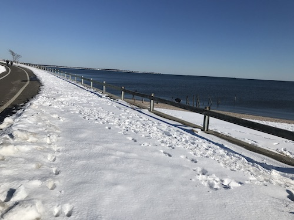
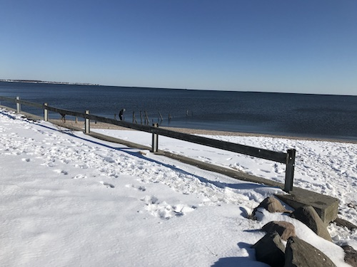
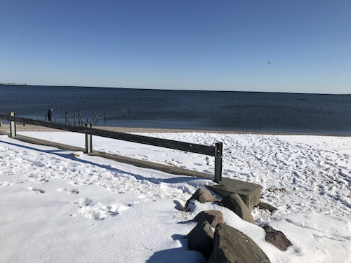
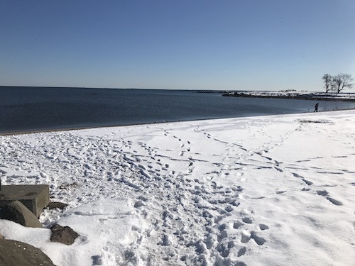
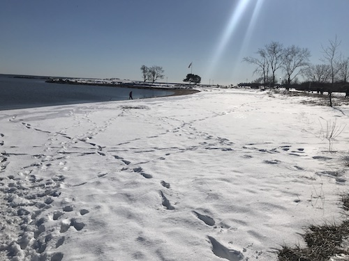

Savin Rock Beach





11/
full essaySometimes, when I use the word ‘beach’ to describe the sandbars along the Mississippi River, friends and acquaintances that grew up along the coast will scoff. They will explain, usually with the bravado of youth, that river beaches not real beaches and that I would have to go oceanside to have an authentic ‘beach’ experience.